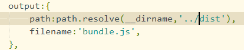

# 作用
前端模块化的打包工具：用于处理模块化和打包，可以处理模块之间的依赖。
# 关系
webpack依赖npm打包方式，因此需要有nodejs的环境
# 安装
在安装好node的情况下
全局安装：npm install webpack@版本号 -g
局部安装：cd 对应目录 npm install webpack@版本号 --save-dev 其中-dev表示编译时依赖，像vue这些的安装就不要添加这个，因为vue也要开发时依赖
# 使用
一个项目的源码一般都是放在src文件夹中，而dist文件夹中放的是打包后的项目
将dist文件夹给服务器发布
一般只需要打包main.js，因为webpack会将有依赖的js文件统一处理生成一个js文件
传统打包方法：
webpack ./src/main.js ./dist/bundle.js通过webpack.config.js来配置webpack，使之通过webpack命令就直接打包
那么就先需要通过node的命令
- 先通过npm init生成一个
package.json里面存放项目配置的内容 - 再通过npm install来安装项目中所用到的node包
上图就是通过配置文件来初始话了webpack的入口和出口，其中path用到了node包中的动态获取文件路径的操作，这样可以便捷获取当前目录下的dist文件夹但是一般不使用webpack命令来打包 而是通过npm run build来进行打包 与webpack作用相同因此只需要在package.json中添加一层映射即可- 先通过npm init生成一个
此外每个项目最好都安装本地的webpack，这样项目与项目之间的配置就不会碰撞
package.json终端scripts脚本在执行前会先到本地的node_modules路径下寻找命令，找不到再去全局执行命令的形式
npm run 命令
# loader
单纯的js模块化打包是不满足日常需求的，给webpack扩展对应的loader就可以实现其他功能
例如ES6转换ES5、less转成css，.vue转成js文件
# 使用过程
- 通过npm安装需要使用的loader
- 在webpack.config.js中的module关键字下进行配置
# 举例使用css-loader
先打开webpack的官方网址，点击中文文档，点击LOADERS
在左边有样式板块，点进去就有css-loader与style-loader
通过这一步骤再使用
npm run build那么css文件也被打包到bundle.js文件中去，不再需要引入css文件
其中style-loader是必备的用于css的DOM显示
# url-loader
作用：主要用在了css中的url，例如背景图片，那么单纯的css-loader是不足以打包图片的
配置解释：在上图的url-loader中主要注意的是limit，可以将其看作图片文件大小的极限
只有图片文件大小小于8192kb时，才能通过url-loader转换成base类型，那么可以正常打包和显示。如果图片文件大于limit，那么就需要我们安装file-loader，其中file-loader是不需要配置的。
**注意事项：**要注意的是图片文件的位置打包完成后一般都是在dist文件夹中，但index.html若不在该文件夹中，那么图片文件的目录回搜索失败，它默认index.html与图片文件在同一目录下。这时候的解决方法是在webpack.congif.js文件的output中添加一个publicPath。
**补充：**默认的图片打包是通过哈希值命名的，并且存放在了dist目录下。我们可以通过url-loader的option配置来实现自定义命名的打包。
给option添加name配置，将打包文件配置在dist/img下且命名为原名称.八位哈希.原格式
# es6-es5
这里通过官网的babel-loader即可，要注意的是webpack的版本与loader的版本
其中的babel-preset-env是需要一个配置文件来设置的，为了应对其他版本的es
这里我们只使用
npm install --save-dev babel-loader@7.1.5 babel-core@6.26.3 babel-preset-es2015@6.24.1
单纯的实现es6-es5的转换，loader的版本可能低于现在的版本，配置这边也将presets设置为了es2015

# vue-loader
通过webpack引入vue就不需要通过<script>来引入vue的源码了，这就是nmp安装。
npm install --save vue
安装好之后就存放在了node_modules中，直接在js文件中
import Vue from ‘vue’
注意事项：因为vue是存在好几种版本的，默认引入的是
vue.runtime.js
所以我们需要修改默认引入的文件，通过修改webpack的配置
resolve属性中的alias属性就是用来设置寻找vue的默认文件
# Plugin
# HtmlWebpackPlugin
真实发布项目时是发布dist文件夹中的内容，但是html文件并不在这个文件夹中，这时候使用这个插件
功能：
自动生成html文件将打包的js文件，自动通过script标签插入到body中
安装：
npm install html-webpack-plugin --save-dev
修改配置：
# UglifyPlugin
**作用：**用于js文件的压缩，来缩小内存
安装：npm install uglifyjs-webpack-plugin --save-dev
配置：
# server插件
**作用：**因为用上了webpack后，每次修改代码都需要重新打包，会十分的不便捷。
**解决方案：**因此webpack-dev-server插件可以给我们提供一个本地服务器用于监听一个文件夹，当文件改变时立即重新编译而不用重新发布
**安装：**npm install --save-dev webpack-dev-server@2.9.3 这里的版本要与webpack对应
**配置：**在webpack-config中添加。

其中contentBase表示监听的文件夹，inline表示实时
**命令设置：**在package.json中添加命令，这样就会局部寻找webpack-dev-server
运行：npm run dev
# 配置文件拆离与合并
开发时常常会有一个build文件夹用于存放配置文件,目前我们只有一个webpack.config,js配置文件
但常常我们开发时与发布时的配置文件是不同的，例如压缩文件是放在发布时的配置文件，而服务器开启放在开发时的配置文件
因此我们创建三个配置文件放在build文件夹中，独有的部分写出来
通过webpack-merge插件进行与base-config.js的合并即可
安装：npm install webpack-merge@4.1.5
使用：
在其他的配置文件中将base配置文件导入，再利用
webpackMerge合并修改
package.json中的命令运行方式添加上--config 配置文件的目录，这样就不会默认使用的是webpack.config.js
由于新创建了一个build文件夹，那么打包出来的dist文件夹存放的目录需要修改，所以需要修改
base.config.js中的path